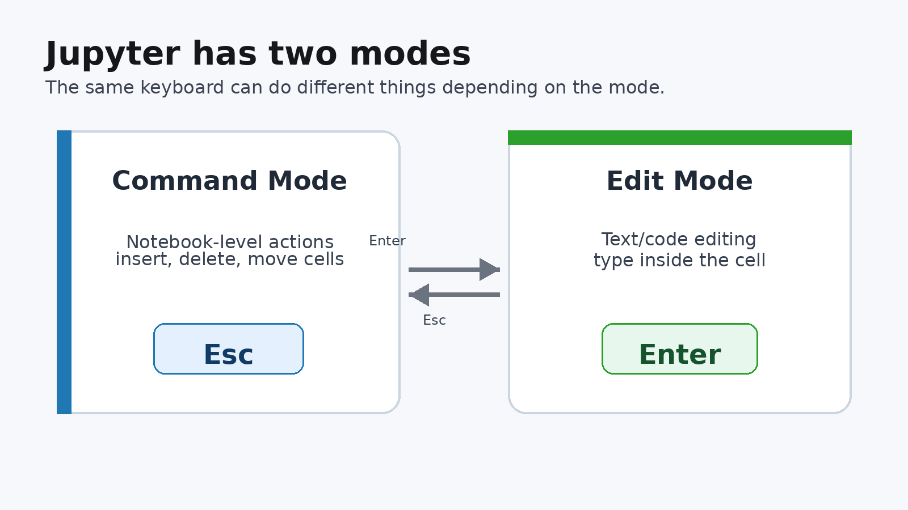
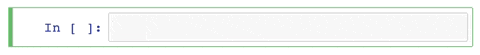
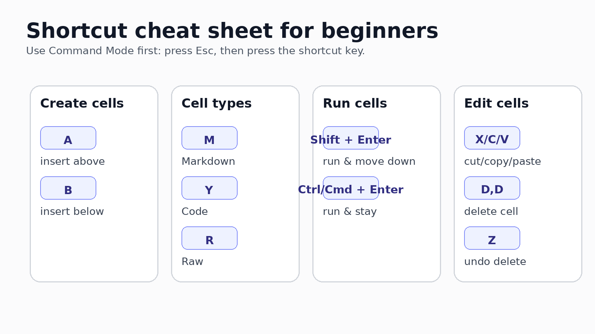
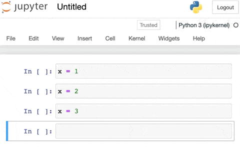
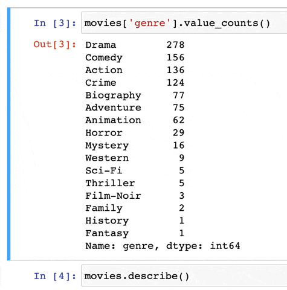
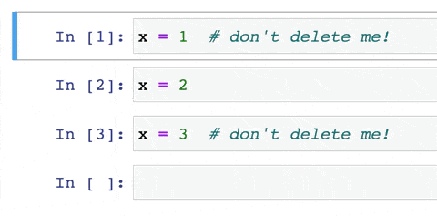
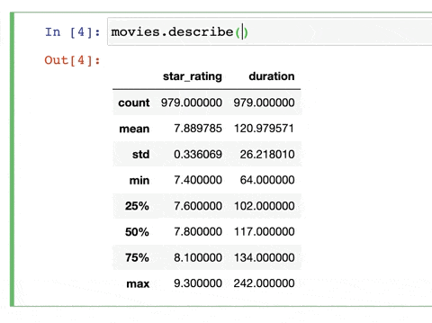
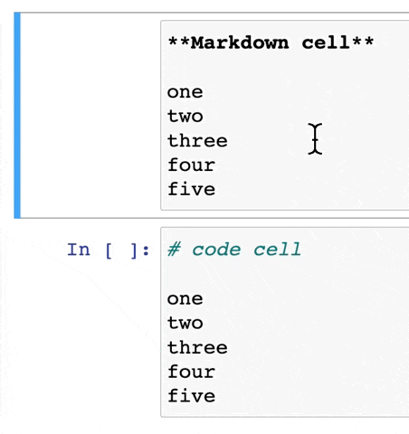
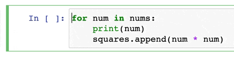

A Short Introduction to Jupyter
2026-05-08
By the end of this short tutorial, students should be able to:
Note
The goal is not to memorize every shortcut. Start with the few that save the most time.
Jupyter notebooks are built from cells.
Each cell can hold:
Shortcuts help you move quickly between these tasks without constantly using the mouse.

In Command Mode, Jupyter listens for notebook-level commands.
In Edit Mode, Jupyter lets you type inside a cell.

| Goal | Shortcut |
|---|---|
| Switch to Command Mode | Esc |
| Switch to Edit Mode | Enter |
Classroom tip: When a shortcut does not work, first press Esc and try again.

Use these shortcuts in Command Mode.
| Cell type | Shortcut | Use it for |
|---|---|---|
| Markdown | M |
explanations, headings, instructions |
| Code | Y |
Python code |
| Raw | R |
unformatted text, nbconvert workflows |
| Action | Shortcut |
|---|---|
| Run cell and move down | Shift + Enter |
| Run cell and stay | Ctrl + Enter or Cmd + Enter |
For teaching, Shift + Enter is the most useful habit.
Use these in Command Mode.
| Action | Shortcut |
|---|---|
| Insert cell above | A |
| Insert cell below | B |
| Delete selected cell | D, then D again |
| Undo cell deletion | Z |
Ask students to do this in a notebook:
Esc.M to make it Markdown.## My first notebook note.Shift + Enter.Y to make the next cell a Code cell.The command palette is useful when you forget a shortcut.
P in Command ModeCmd + Shift + C on Mac or Ctrl + Shift + C on Windows/Linux
Sometimes a cell output becomes too large.
In classic Jupyter Notebook:
EscO
Deleted the wrong cell?
Press Z in Command Mode.

When your cursor is inside a function call, press:
Shift + Tab
This opens help for the function.

Multiple cursors are useful when editing similar lines.
Option, then dragAlt, then drag
Open the companion notebook and complete this sequence:
Shift + Enter.Z.Most core shortcuts are the same:
M for MarkdownY for CodeA and B for new cellsShift + Enter to run and move downSome shortcuts may differ, especially R for Raw cells and command-palette shortcuts.
Start with only these:
| Shortcut | Meaning |
|---|---|
Esc |
Command Mode |
Enter |
Edit Mode |
M / Y / R |
Markdown / Code / Raw |
Shift + Enter |
Run and move down |
A / B |
Insert above / below |
D,D / Z |
Delete / undo deletion |
A notebook is not just code.
It is a communication document:
Good shortcuts help students focus on the story instead of the interface.
The animated Jupyter examples in this slide deck are stored locally in the images/ folder. They are drawn from the Data School Jupyter shortcuts article included in the user-provided source material.
Comment and uncomment code
Use this in Edit Mode.
Cmd + /Ctrl + /